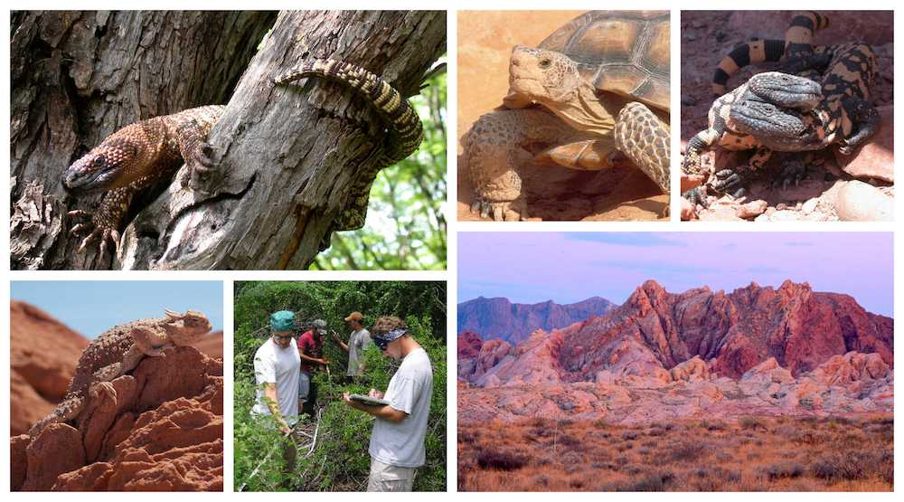

Thank you for your interest in graduate studies at Austin Peay State University and in the Center of Excellence for Field Biology. I do not always have space or funding for new students, but I usually try to make space for well‐qualified applicants. The best way to find out if there are openings for the upcoming year is to email me (giengerc@apsu.edu).
What makes a good M.S. application to APSU?
• a good sense of one’s research interests; your interests should overlap at least somewhat with mine
• hands‐on field or lab experience
• strong, supportive letters of recommendation from professors or supervisors who know you well enough to comment on your academic abilities or research experience
• competitive academic record (GPA > 3.0, GRE scores >70th percentile)
What qualities should you have in order to be successful at APSU?
Successful students:
• make their research and graduate program their top priority (see statement below)
• are willing to work hard and to learn independently, without direct supervision
• are proactive in gaining new tools (e.g. GIS, statistics, analytical methods) that will be needed to conduct and complete their research
• are strong writers or are willing to work and receive criticism to become better
• are genuinely interested in their study organisms/system, as well as the broader theoretical questions that frame their work
• are willing to teach during the academic year (most of our students work as TAs in the Department of Biology or RAs in the Center of Excellence for Field Biology)
• are willing to apply for internal and external funding to help support their work
• have a good sense of humor and enjoy working in the field/lab
Feel free to contact me if you have any questions.
This following statement (abridged) by Dr. Laurie Vitt
(Emeritus Curator of Reptiles at the University of Oklahoma) summarizes
perfectly what can be expected for people interested in pursuing
graduate study and research careers. I agree with Dr. Vitt
whole-heartedly and have re-printed his words here.
“I have always expected students to be self driven, highly motivated, independent, and most of all, very serious about graduate school. A very limited job market means that only those graduate students who establish their visibility in the highly competitive market will be able to pursue academic careers with research opportunities. I wish you all success, and I add that a serious commitment to research, such that it becomes your highest priority while in graduate school is the single most important thing you can do to increase your chances of being competitive.
Students conducting field research should schedule their lives around their field schedule, not visa versa. Students should also design, carry out, and complete their research in a timely fashion demonstrating creativity and competence. If this is not your frame of mind, then you would be much better off to pursue a career that offers decent financial incentives, allows you to participate in many other activities, and allows you to choose where you will live.
If you are still highly motivated, then a search of the internet will give you many ideas regarding graduate programs in Herpetology. I urge you to critically examine the research records of the faculty that you view as potential advisors. You will be much more likely to hone your research skills and publish in top-tier scientific journals (thus establishing a name for yourself) if you align yourself with people who are actively doing it themselves. Finally, don’t be intimidated, and if you are, then maybe you should look at other career options.”